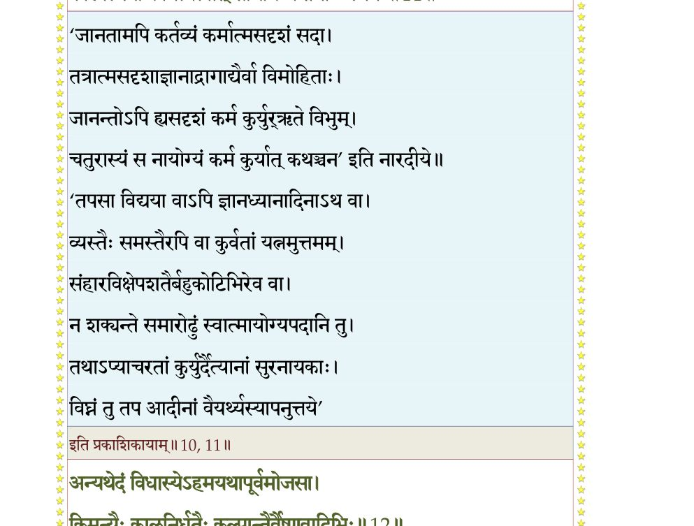
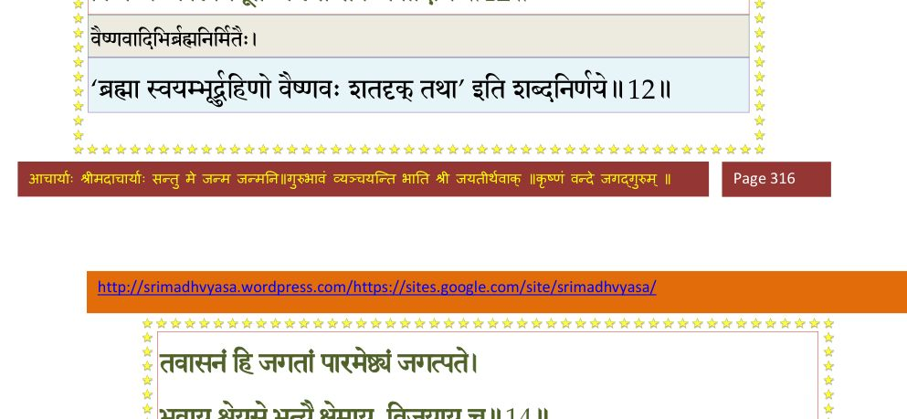
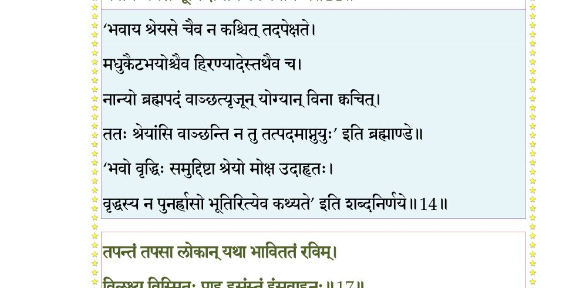
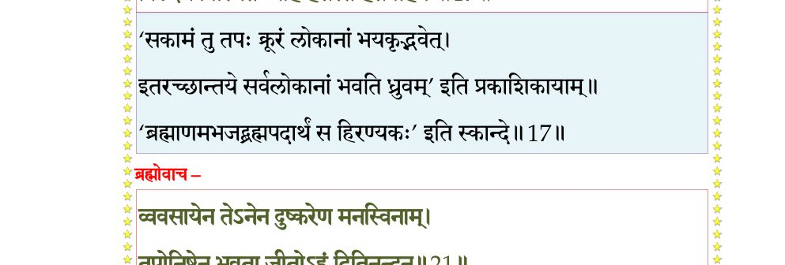
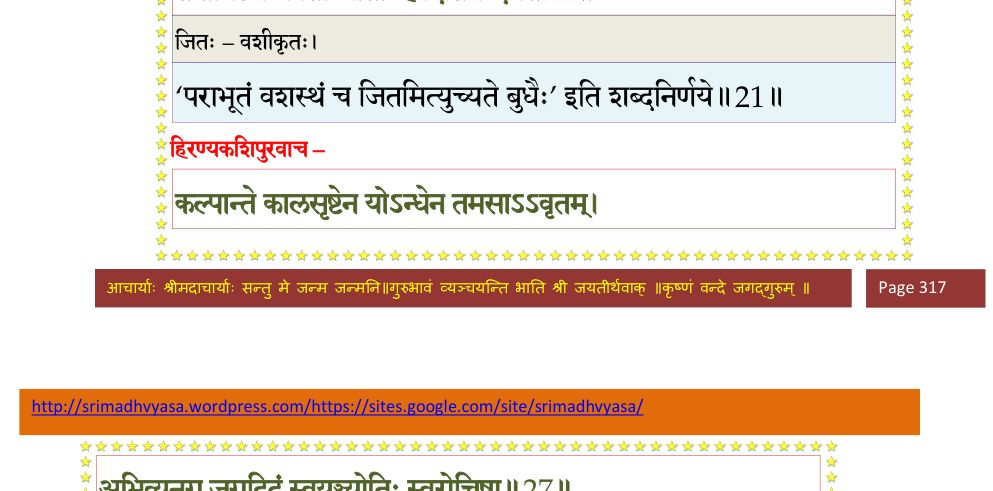
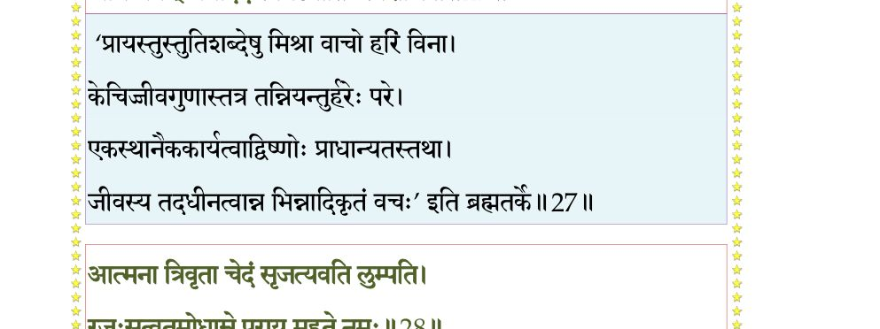
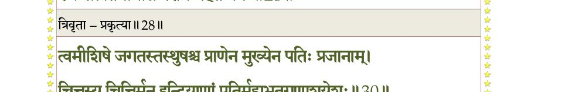
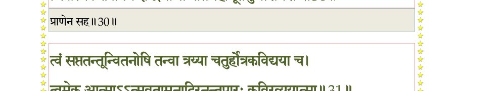
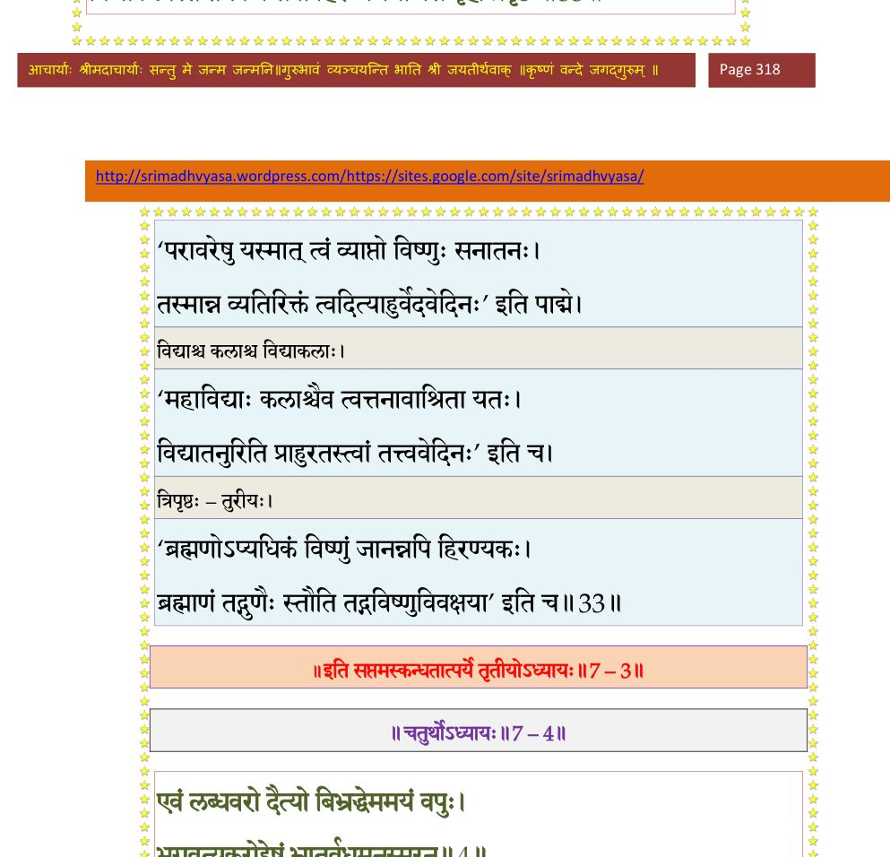

स्कन्ध 7 · अध्याय 3
श्लोक १
नारद उवाच–
हिरण्यकशिपू राजन्नजेयमजरामरम् ।
आत्मानमप्रतिद्वन्द्वमेकराजं व्यधित्सत।। १ ।।
हिरण्यकशिपू राजन्नजेयमजरामरम् ।
आत्मानमप्रतिद्वन्द्वमेकराजं व्यधित्सत।। १ ।।
श्लोक २
स तेपे मन्दरद्रोण्यां तपः परमदारुणम् ।
ऊर्ध्वबाहुर्नभोदृष्टिः पादाङ्गुष्ठाश्रितावनिः।। २ ।।
ऊर्ध्वबाहुर्नभोदृष्टिः पादाङ्गुष्ठाश्रितावनिः।। २ ।।
श्लोक ३
जटादीधितिभी रेजे संवर्तार्क इवांशुभिः ।
तस्मिंस्तपस्तप्यमाने देवाः स्थानानि भेजिरे।। ३ ।।
तस्मिंस्तपस्तप्यमाने देवाः स्थानानि भेजिरे।। ३ ।।
श्लोक ४
तस्य मूर्ध्नः समुद्भूतः सधूम्रोऽग्निस्तपोमयः ।
तिर्यगूर्ध्वमधोलोकानतपद् विष्वगीरितः।। ४ ।।
तिर्यगूर्ध्वमधोलोकानतपद् विष्वगीरितः।। ४ ।।
श्लोक ५
चुक्षुभुर्नद्युदन्वन्तः सद्वीपाद्रिश्चचाल भूः ।
निपेतुः सग्रहास्तारा जज्वलुश्च दिशो दश।। ५ ।।
निपेतुः सग्रहास्तारा जज्वलुश्च दिशो दश।। ५ ।।
श्लोक ६
तेन तप्ता दिवं त्यक्त्वा ब्रह्मलोकं ययुः सुराः ।
धात्रे विज्ञापयामासुर्देवदेव जगत्पते।। ६ ।।
धात्रे विज्ञापयामासुर्देवदेव जगत्पते।। ६ ।।
श्लोक ७
दैत्येन्द्रतपसा तप्ता दिवि स्थातुं न शक्नुमः ।
तस्य चोपशमं ब्रह्मन् विधेहि यदि मन्यसे।। ७ ।।
तस्य चोपशमं ब्रह्मन् विधेहि यदि मन्यसे।। ७ ।।
श्लोक ८
लोका न यावन्नङ्क्ष्यन्ति बलिहारास्तव प्रभो ।
तस्यायं किल सङ्कल्पश्चरतो दुश्चरं तपः।। ८ ।।
तस्यायं किल सङ्कल्पश्चरतो दुश्चरं तपः।। ८ ।।
श्लोक ९
श्रूयतां किं न विदितं तथाऽपि विनिवेद्यते ।
सृष्ट्वा चराचरमिदं तपोयोगसमाधिना ।।
अध्यास्ते सर्वधिष्ण्येभ्यः परमेष्ठी निजासनम्।। ९ ।।
सृष्ट्वा चराचरमिदं तपोयोगसमाधिना ।।
अध्यास्ते सर्वधिष्ण्येभ्यः परमेष्ठी निजासनम्।। ९ ।।
श्लोक १०
तदहं वर्धमानेन तपोयज्ञसमाधिना ।
कालात्मनोश्च नित्यत्वात् साधयिष्ये तथाऽऽत्मनः।। १० ।।
कालात्मनोश्च नित्यत्वात् साधयिष्ये तथाऽऽत्मनः।। १० ।।
भागवततात्पर्यनिर्णय

श्लोक ११
अन्यथेदं विधास्येऽहमयथापूर्वमोजसा ।
किमन्यैः कालनिर्धूतैः कल्पान्तैर्वैष्णवादिभिः।। ११ ।।
किमन्यैः कालनिर्धूतैः कल्पान्तैर्वैष्णवादिभिः।। ११ ।।
भागवततात्पर्यनिर्णय

श्लोक १२
इति शुश्रुम निर्बन्धं तपःपरममास्थितः ।
विधत्स्वानन्तरं युक्तं स्वयं त्रिभुवनेश्वर।। १२ ।।
विधत्स्वानन्तरं युक्तं स्वयं त्रिभुवनेश्वर।। १२ ।।
श्लोक १३
तवासनं हि जगतां पारमेष्ठ्यं जगत्पते ।
भवाय श्रेयसे भूत्यै क्षेमाय विजयाय च।। १३ ।।
भवाय श्रेयसे भूत्यै क्षेमाय विजयाय च।। १३ ।।
भागवततात्पर्यनिर्णय

श्लोक १४
इति विज्ञापितो देवैर्भगवानात्मभूर्नृप ।
परीतो भृगुदक्षाद्यैर्ययौ दैत्येश्वराश्रमम्।। १४ ।।
परीतो भृगुदक्षाद्यैर्ययौ दैत्येश्वराश्रमम्।। १४ ।।
श्लोक १५
तं ददर्श प्रतिच्छन्नं वल्मीकतृणकीचकैः ।
पिपीलिकाभिराकीर्ण(र्णं)मेदत्वङ्मांसशोणितम्।। १५ ।।
पिपीलिकाभिराकीर्ण(र्णं)मेदत्वङ्मांसशोणितम्।। १५ ।।
श्लोक १६
तपन्तं तपसा लोकान् यथा भाविततं रविम् ।
विलक्ष्य विस्मितः प्राह हसंस्तं हंसवाहनः।। १६ ।।
विलक्ष्य विस्मितः प्राह हसंस्तं हंसवाहनः।। १६ ।।
भागवततात्पर्यनिर्णय

श्लोक १७
ब्रह्मोवाच–
उत्तिष्ठोत्तिष्ठ भद्रं ते तपः सिद्धोऽसि काश्यप ।
वरदोऽहमनुप्राप्तो व्रियतामीप्सितो वरः।। १७ ।।
उत्तिष्ठोत्तिष्ठ भद्रं ते तपः सिद्धोऽसि काश्यप ।
वरदोऽहमनुप्राप्तो व्रियतामीप्सितो वरः।। १७ ।।
श्लोक १८
अद्राक्षमहमेतत् ते हृत्सारं महदद्भुतम् ।
दंशभक्षितदेहस्य प्राणा ह्यस्थिषु शेरते।। १८ ।।
दंशभक्षितदेहस्य प्राणा ह्यस्थिषु शेरते।। १८ ।।
श्लोक १९
नैतत् पूर्वर्षयश्चक्रुर्न करिष्यन्ति चापरे ।
निरम्बुर्धारयेत् प्राणान् को वै दिव्यसमाः शतम्।। १९ ।।
निरम्बुर्धारयेत् प्राणान् को वै दिव्यसमाः शतम्।। १९ ।।
श्लोक २०
व्यवसायेन तेऽनेन दुष्करेणामनस्विभिः ।
तपोनिष्ठेन भवता जितोऽहं दितिनन्दन।। २० ।।
तपोनिष्ठेन भवता जितोऽहं दितिनन्दन।। २० ।।
भागवततात्पर्यनिर्णय

श्लोक २१
ततस्त आशिषः सर्वा ददाम्यसुरपुङ्गव ।
मर्त्यस्य ते ह्यमर्त्यस्य दर्शनं न च निष्फलम्।। २१ ।।
मर्त्यस्य ते ह्यमर्त्यस्य दर्शनं न च निष्फलम्।। २१ ।।
श्लोक २२
नारद उवाच–
इत्युक्त्वाऽऽदिभवो देवो भक्षिताङ्गं पिपीलिकैः ।
कमण्डलुजलेनौक्षद् दिव्येनामोघराधसा।। २२ ।।
इत्युक्त्वाऽऽदिभवो देवो भक्षिताङ्गं पिपीलिकैः ।
कमण्डलुजलेनौक्षद् दिव्येनामोघराधसा।। २२ ।।
श्लोक २३
स तत्कीचकवल्मीकात् सह ओजोबलान्वितः ।
सर्वावयवसम्पन्नो वज्रसंहननो युवा ।
उत्थितस्तप्तहेमाभो विभावसुरिवैधसः।। २३ ।।
सर्वावयवसम्पन्नो वज्रसंहननो युवा ।
उत्थितस्तप्तहेमाभो विभावसुरिवैधसः।। २३ ।।
श्लोक २४
स निरीक्ष्याम्बरे देवं हंसवाहनमास्थितम् ।
ननाम शिरसा भूमौ तद्दर्शनमहोत्सवः।। २४ ।।
ननाम शिरसा भूमौ तद्दर्शनमहोत्सवः।। २४ ।।
श्लोक २५
उत्थाय प्राञ्जलिः प्रह्व ईक्षमाणो दृशा विभुम् ।
हर्षाश्रुपुलकोद्भेदो गिरा गद्गदयाऽगृणत्।। २५ ।।
हर्षाश्रुपुलकोद्भेदो गिरा गद्गदयाऽगृणत्।। २५ ।।
श्लोक २६
हिरण्यकशिपुरुवाच–
कल्पान्ते कालसृष्टेन योऽन्धेन तमसाऽऽवृतम् ।
अभिव्यनग् जगदिदं स्वयंज्योतिः स्वरोचिषा।। २६ ।।
कल्पान्ते कालसृष्टेन योऽन्धेन तमसाऽऽवृतम् ।
अभिव्यनग् जगदिदं स्वयंज्योतिः स्वरोचिषा।। २६ ।।
भागवततात्पर्यनिर्णय

श्लोक २७
आत्मना त्रिवृता चेदं सृजत्यवति लुम्पति ।
रजःसत्वतमोधाम्ने पराय महते नमः।। २७ ।।
रजःसत्वतमोधाम्ने पराय महते नमः।। २७ ।।
भागवततात्पर्यनिर्णय

श्लोक २८
नम आद्याय बीजाय ज्ञानविज्ञानमूर्तये ।
प्राणेन्द्रियमनोबुद्धिविकारैर्व्यक्तिमीयुषे।। २८ ।।
प्राणेन्द्रियमनोबुद्धिविकारैर्व्यक्तिमीयुषे।। २८ ।।
श्लोक २९
त्वमीशिषे जगतस्तस्थुषश्च प्राणेन मुख्येन पतिः प्रजानाम् ।
चित्तस्य चित्तिर्मनइन्द्रियाणां पतिर्महाभूतगुणाशयेशः।। २९ ।।
चित्तस्य चित्तिर्मनइन्द्रियाणां पतिर्महाभूतगुणाशयेशः।। २९ ।।
भागवततात्पर्यनिर्णय

श्लोक ३०
त्वं सप्ततन्तून् वितनोषि तन्वा त्रय्या चतुर्होत्रकविद्यया च ।
त्वमेक आत्माऽऽत्मवतामनादिरनन्तपारः कविरव्ययात्मा।। ३० ।।
त्वमेक आत्माऽऽत्मवतामनादिरनन्तपारः कविरव्ययात्मा।। ३० ।।
श्लोक ३१
त्वमेव कालोऽनिमिषो जनानामायुर्लवाद्यावयवैः क्षिणोषि ।
कूटस्थ आत्मा परमेष्ठ्यजो महान् त्वं जीवलोकस्य च जीव आत्मा ।।
त्वत्तः परं नापरमप्यनेजदेजच्च किञ्चिद् व्यतिरिक्तमस्ति ।
विद्याकलास्ते तनवश्च सर्वा हिरण्यगर्भोऽसि बृहत् त्रिपृष्टः।। ३१ ।।
कूटस्थ आत्मा परमेष्ठ्यजो महान् त्वं जीवलोकस्य च जीव आत्मा ।।
त्वत्तः परं नापरमप्यनेजदेजच्च किञ्चिद् व्यतिरिक्तमस्ति ।
विद्याकलास्ते तनवश्च सर्वा हिरण्यगर्भोऽसि बृहत् त्रिपृष्टः।। ३१ ।।
भागवततात्पर्यनिर्णय

श्लोक ३४
व्यक्तं विभो स्थूलमिदं शरीरं येनेन्द्रियप्राणमनोगुणांस्त्वम् ।
भुङ्क्ते स्थितो धामनि पारमेष्ठ्ये अव्यक्त आत्मा पुरुषः पुराणः ।।
अनन्ताव्यक्तरूपेण येनेदमखिलं ततम् ।
चिदचिच्छक्तियुक्ताय तस्मै भगवते नमः।। ३४ ।।
भुङ्क्ते स्थितो धामनि पारमेष्ठ्ये अव्यक्त आत्मा पुरुषः पुराणः ।।
अनन्ताव्यक्तरूपेण येनेदमखिलं ततम् ।
चिदचिच्छक्तियुक्ताय तस्मै भगवते नमः।। ३४ ।।
श्लोक ३५
यदि दास्यस्यभिमतान् वरान् मे वरदोत्तम ।
भूतेभ्यस्त्वद्विसृष्टेभ्यो मृत्युर्मा भून्मम प्रभो।। ३५ ।।
भूतेभ्यस्त्वद्विसृष्टेभ्यो मृत्युर्मा भून्मम प्रभो।। ३५ ।।
श्लोक ३६
नान्तर्बहिर्दिवा नक्तमन्यस्मादपि चायुधैः ।
न भूमौ नाम्बरे मृत्युर्न नरैर्न मृगैरपि।। ३६ ।।
न भूमौ नाम्बरे मृत्युर्न नरैर्न मृगैरपि।। ३६ ।।
श्लोक ३७
व्यसुभिर्वासुमद्भिर्वा सुरासुरमहोरगैः ।
अप्रतिद्वन्द्वता युद्धे ऐकपत्यं च देहिनाम्।। ३७ ।।
अप्रतिद्वन्द्वता युद्धे ऐकपत्यं च देहिनाम्।। ३७ ।।
श्लोक ३८
सर्वेषां लोकपालानां महिमानं तथाऽऽत्मनः ।
तपोयोगप्रभावेन यो न रिष्यति कर्हिचित्।। ३८ ।।
तपोयोगप्रभावेन यो न रिष्यति कर्हिचित्।। ३८ ।।
।। इति श्रीमद्भागवते सप्तमस्कन्धे तृतीयोऽध्यायः ।।